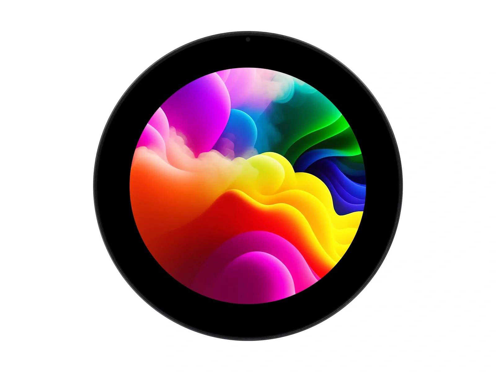

ESP32-P4-WIFI6-Touch-LCD-3.4C
Waveshare · ESP32-P4 3.4inch round touch display development board
ESP32-P4-WIFI6-Touch-LCD-3.4C is a 3.4" 800x800 IPS Capacitive touch ESP32 display board by Waveshare based on the ESP32-P4 with 32MB NOR flash, 32MB (in package) PSRAM.
Features, ports & interfaces
- MIPI-DSI display (2-lane)
- Capacitive touch (GT9271, 10 points)
- 32 MB PSRAM (in package)
- 32 MB flash (NOR)
- microSD (TF) card slot (SDIO 3.0)
- Wi-Fi 6 (802.11ax, 2.4 GHz) via ESP32-C6 co-processor – version from the ESP32-C6 datasheet
- Bluetooth 5.3 (LE) via ESP32-C6 co-processor – version from the ESP32-C6 datasheet
- Thread (802.15.4) – IEEE 802.15.4 radio of the ESP32-C6 co-processor – SoC capability per the Espressif datasheet; needs firmware support
- Zigbee (802.15.4) – IEEE 802.15.4 radio of the ESP32-C6 co-processor – SoC capability per the Espressif datasheet; needs firmware support
- Matter-capable radio (Wi-Fi / Thread) – ESP32-C6 co-processor capability per the Espressif datasheet; firmware-dependent
- 2× USB-C (USB-to-UART, USB FS)
- USB-A host (USB 2.0 OTG HS)
- GPIO header 40-pin (2.54mm, some RPi HAT compatible)
- Speaker header (amplifier on board)
- 2× microphone
- MIPI-CSI camera connector (15-pin, 2-lane)
- RTC with backup battery holder (rechargeable cell)
Specifications
| Parameter | Value | Source |
|---|---|---|
| Screen size | 3.4" | source |
| Resolution | 800x800 | source |
| Panel | IPS | source |
| Shape | Round | source |
| Display interface | MIPI-DSI | source |
| Touch | Capacitive | source |
| Touch controller | GT9271 | source |
| MCU / SoC | ESP32-P4NRW32 | source |
| MCU family | ESP32-P4 | source |
| Co-processor | ESP32-C6-MINI-1 (SDIO) | source |
| CPU frequency | up to 360MHz (HP) / 40MHz (LP) | source |
| Flash | 32MB NOR | source |
| PSRAM | 32MB (in package) | source |
| SRAM | 768KB HP L2MEM + 32KB LP SRAM | source |
| Wi-Fi | Wi-Fi 6 (via ESP32-C6) | source |
| Bluetooth | Bluetooth 5 (LE) | source |
| USB | USB 2.0 OTG HS Type-A + USB-to-UART Type-C + USB FS Type-C | source |
| Category | Waveshare ESP32-P4 | |
| Active area | 87.60 × 87.60 mm | source |
| Audio | ES8311 codec + ES7210 echo cancellation, dual microphones, speaker header (PH2.0, 8Ω 2W) | source |
| Brightness | 300cd/m² | source |
| Camera | MIPI-CSI connector (15-pin, 2-lane) | source |
| Color gamut | 70% NTSC | source |
| Contrast | 1200:1 | source |
| Dimensions | 115.00 × 115.00 mm | source |
| Glass | Optical bonding toughened glass (up to 6H) | source |
| GPIO | 40-pin header (2.54mm, some RPi HAT compatible) | source |
| Interface detail | MIPI 2-lane | source |
| Operating temp. | 0℃ ~ 60℃ | source |
| ROM | 128KB HP + 16KB LP | source |
| RTC | RTC battery holder (rechargeable only) | source |
| SD / TF | TF card (SDIO 3.0) | source |
| Speaker interface | Yes | source |
| Touch points | 10 | source |
| Vendor | Waveshare | |
| Viewing angle | 170° | source |
Official links & documentation
Files
Offline copies are available on the interactive page.
Notes
- The request listed both round boards as 720×720; Waveshare's product page and wiki give 800×800 for the 3.4C (720×720 is the 4C).